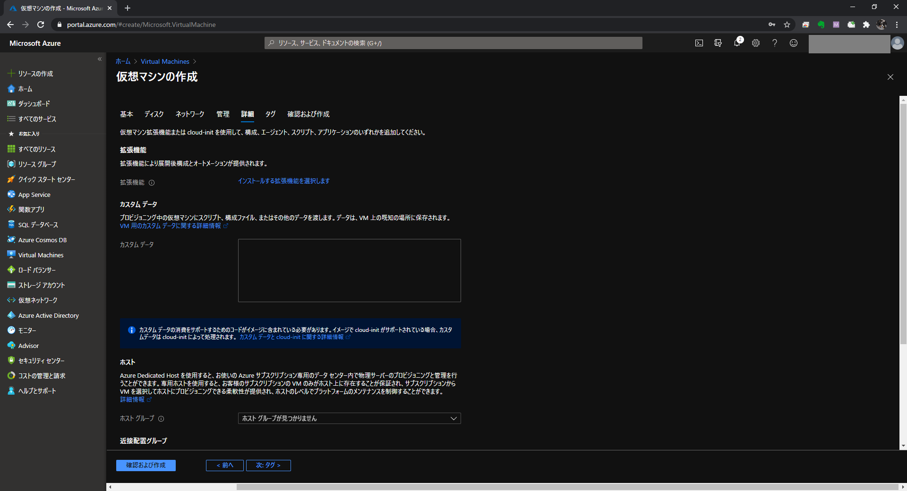

目次
VM 追加
Azure のポータル画面で [Virtual Machines] をクリックし [＋追加] / [＋仮想マシン] をクリックします。
[基本] で下記内容を入力します。 ${ResourceGroupName} にはリソースグループを，${SubscriptionName} にはサブスクリプションを，${VirtualMachineName} には仮想マシン名を指定します。
| 項目 | 設定 |
|---|---|
| サブスクリプション | ${SubscriptionName} |
| リソースグループ | ${ResourceGroupName} |
| 仮想マシン名 | ${VirtualMachineName} |
| 地域 | 東日本 |
| 可用性オプション | インフラストラクチャ冗長は必要ありません |
| イメージ | 任意 |
| サイズ | 任意 |
| ユーザー名 | 任意 |
| パスワード | 任意 |
| パスワードの確認 | 任意 |
| パブリック受信ポート | なし |
[ディスク] で下記内容を入力します。
| 項目 | 設定 |
|---|---|
| OS ディスクの種類 | 任意 |
| 暗号化の種類 | 規定 |
[ネットワーク] で下記内容を入力します。 ${VirtualNetworkName} には仮想ネットワークを，${VirtualMachineName} には仮想マシン名を指定します。
| 項目 | 設定 |
|---|---|
| 仮想ネットワーク | ${VirtualNetworkName} |
| サブネット | default(10.0.0.0./24) |
| パブリック IP | (新規) ${VirtualMachineName}-ip |
| NIC ネットワークセキュリティグループ | Basic |
| パブリック受信ポート | なし |
| 高速ネットワーク | 有効 |
| 負荷分散 | 無効 |
[管理] で下記内容を入力します。
| 項目 | 設定 |
|---|---|
| ブート診断 | マネージドストレージアカウントで有効にする (推奨) |
| OS のゲスト診断を有効にする | 無効 |
| システム割当マネージド ID | 無効 |
| 自動シャットダウン | 無効 |
| バックアップ | 無効 |
[詳細] で下記内容を入力します。
| 項目 | 設定 |
|---|---|
| ホストグループ | |
| 近接配置グループ | |
| VM の生成 | Gen 1 |

[タグ] は何も指定せず，[確認と作成] をクリックします。
[作成] をクリックします。
VM 接続
[Azure サービス] の [Virtual Machines] をクリックします。
VM 一覧画面で接続したい VM をクリックします（今回は ）。
[接続] の [Bastion] をクリックします。
[Bastion を使用する] をクリックします。
ユーザー名，パスワードを入力し [接続] をクリックします。
以上で Bastion 経由で VM に接続できました。
ファイルストレージ利用
[Azure サービス] の [ストレージアカウント] をクリックします。
使用するストレージアカウントをクリックします。
[File サービス] の [ファイル共有] をクリックします。
[share] をクリックします。
VM に配置したいファイルを [アップロード] でストレージにアップロードします。
VM の /mnt/share にストレージをマウントしているので /mnt/share からファイルを適宜取得し利用します。
参考
Linux で Azure Files の設定
Windows では PowerShell コマンドを実行するだけで Azure Files の設定が完了します。
Linux では Shell コマンドを実行する前に cifs-utils をインストールする必要があります。
# cifs-utils を先にインストールする
yum install cifs-utils
# Azure Files 設定
sudo mkdir /mnt/share
if [ ! -d "/etc/smbcredentials" ]; then
sudo mkdir /etc/smbcredentials
fi
if [ ! -f "/etc/smbcredentials/sampleazurestorage.cred" ]; then
sudo bash -c 'echo "username=sampleazurestorage" >> /etc/smbcredentials/sampleazurestorage.cred'
sudo bash -c 'echo "password=+S@mp1e@Zur3st0r@G3+S@mp1e@Zur3st0r@G3+S@mp1e@Zur3st0r@G3==" >> /etc/smbcredentials/sampleazurestorage.cred'
fi
sudo chmod 600 /etc/smbcredentials/sampleazurestorage.cred
sudo bash -c 'echo "//sampleazurestorage.file.core.windows.net/share /mnt/share cifs nofail,vers=3.0,credentials=/etc/smbcredentials/sampleazurestorage.cred,dir_mode=0777,file_mode=0777,serverino" >> /etc/fstab'
sudo mount -t cifs //sampleazurestorage.file.core.windows.net/share /mnt/share -o vers=3.0,credentials=/etc/smbcredentials/sampleazurestorage.cred,dir_mode=0777,file_mode=0777,serverino
Linux でディスクサイズの拡張
Azure 上で VM のディスクサイズを拡張する
ポータル画面で [Virtual Machines] をクリックします。
VM をクリックします。
[ディスク] をクリックし拡張するディスクをクリックします。
[設定] の [サイズおよびパフォーマンス] をクリックします。
サイズを選択し [サイズ変更] をクリックします。
VM でファイルシステムを拡張する
# 拡張するパーティションを確認します
> lsblk -p -o NAME,FSTYPE,SIZE,MOUNTPOINT
NAME FSTYPE SIZE MOUNTPOINT
/dev/sda 128G
├─/dev/sda1 xfs 500M /boot
├─/dev/sda2 LVM2_member 63G
│ ├─/dev/mapper/rootvg-tmplv xfs 2G /tmp
│ ├─/dev/mapper/rootvg-usrlv xfs 10G /usr
│ ├─/dev/mapper/rootvg-homelv xfs 1G /home
│ ├─/dev/mapper/rootvg-varlv xfs 8G /var
│ └─/dev/mapper/rootvg-rootlv xfs 2G /
├─/dev/sda14 4M
└─/dev/sda15 vfat 495M /boot/efi
/dev/sdb 32G
└─/dev/sdb1 ext4 32G /mnt
# cloud-utils-growpart をインストールします
> sudo yum install -y cloud-utils-growpart
Red Hat Enterprise Linux 8 for x86_64 - BaseOS - Extended Update Support from RHUI (RPMs) 3.8 kB/s | 2.4 kB 00:00
Red Hat Enterprise Linux 8 for x86_64 - AppStream - Extended Update Support from RHUI (RPMs) 3.9 kB/s | 2.8 kB 00:00
Microsoft Azure RPMs for RHEL8 Extended Update Support 7.2 kB/s | 2.1 kB 00:00
Package cloud-utils-growpart-0.31-1.el8.noarch is already installed.
Dependencies resolved.
Nothing to do.
Complete!
# パーティションを拡張します
> sudo growpart /dev/sda 2
CHANGED: partition=2 start=2050048 old: size=132165632 end=134215680 new: size=266385375 end=268435423
# 物理ボリュームをリサイズします
> sudo pvresize /dev/sda2
Physical volume "/dev/sda2" changed
1 physical volume(s) resized or updated / 0 physical volume(s) not resized
# 領域を確認する
sudo vgs
VG #PV #LV #SN Attr VSize VFree
rootvg 1 5 0 wz--n- <127.02g <104.02g
# 論理ボリュームを拡張します
> sudo lvextend -l +100%FREE /dev/rootvg/rootlv
Size of logical volume rootvg/rootlv changed from 2.00 GiB (512 extents) to <106.02 GiB (27141 extents).
Logical volume rootvg/rootlv successfully resized.
# ファイルシステムを拡張します
> sudo xfs_growfs /
meta-data=/dev/mapper/rootvg-rootlv isize=512 agcount=4, agsize=131072 blks
= sectsz=4096 attr=2, projid32bit=1
= crc=1 finobt=1, sparse=1, rmapbt=0
= reflink=1
data = bsize=4096 blocks=524288, imaxpct=25
= sunit=0 swidth=0 blks
naming =version 2 bsize=4096 ascii-ci=0, ftype=1
log =internal log bsize=4096 blocks=2560, version=2
= sectsz=4096 sunit=1 blks, lazy-count=1
realtime =none extsz=4096 blocks=0, rtextents=0
data blocks changed from 524288 to 27792384
# ルートディレクトリのサイズを確認します
df -hT /
Filesystem Type Size Used Avail Use% Mounted on
/dev/mapper/rootvg-rootlv xfs 107G 829M 106G 1% /